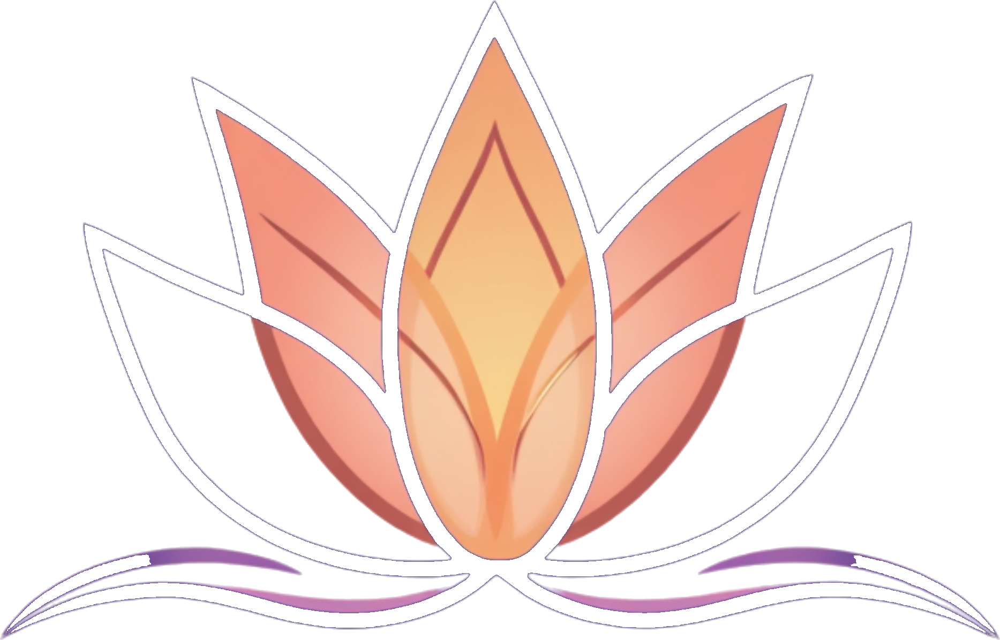

—
—
Protéines
—
—
Glucides
—
—
Lipides
Ingrédients
Préparation

Dernière mise à jour : juillet 2026
Holistica Club collecte les données suivantes dans le cadre de ton utilisation de l'application : ton prénom, âge, taille, poids, niveau d'activité, informations sur ton cycle menstruel, ton profil Ayurvédique (dosha), ainsi que des données de bien-être quotidiennes (humeur, sommeil, niveau de stress) et ta progression (points, séances complétées, série).
Pourquoi on collecte ces données : uniquement pour te fournir des recommandations personnalisées (routine dosha, calcul de récupération, suivi de cycle) et sauvegarder ta progression d'une session à l'autre.
Hébergement : tes données sont stockées de façon sécurisée via Supabase, avec un accès strictement limité à ton propre compte (sécurité au niveau des lignes). Aucune donnée n'est vendue ni partagée avec des tiers à des fins publicitaires.
Tes droits : conformément au RGPD, tu peux à tout moment consulter, corriger ou supprimer définitivement tes données depuis l'onglet Profil, ou en nous contactant à info@maryneares.fr.
Conservation : tes données sont conservées tant que ton compte est actif. En cas de suppression de compte, elles sont effacées sous 30 jours maximum.
Cookies : l'application utilise uniquement des identifiants techniques nécessaires à l'authentification (aucun cookie publicitaire ou de tracking tiers).
Dernière mise à jour : juillet 2026
1. Objet. Holistica Club propose des contenus de bien-être (routines, séances de mouvement, recettes) à visée informative et de mieux-être. L'application ne fournit pas de diagnostic médical et ne remplace pas l'avis d'un professionnel de santé.
2. Compte utilisateur. Tu es responsable de la confidentialité de tes identifiants de connexion. Les informations fournies lors de l'inscription doivent être exactes.
3. Abonnement. Certaines fonctionnalités peuvent être proposées dans le cadre d'un abonnement payant, résiliable à tout moment depuis l'onglet Profil.
4. Propriété intellectuelle. Les contenus (textes, vidéos, recettes, visuels) sont la propriété de Holistica Club et ne peuvent être reproduits sans autorisation.
5. Responsabilité. Les conseils proposés sont d'ordre général. Consulte un professionnel de santé avant tout changement important d'alimentation ou d'activité physique, notamment en cas de grossesse ou de condition médicale particulière.
6. Résiliation. Tu peux supprimer ton compte à tout moment depuis l'onglet Profil. Holistica Club se réserve le droit de suspendre un compte en cas d'usage abusif.
7. Contact. Pour toute question, écris-nous à info@maryneares.fr.
Dernière mise à jour : juillet 2026
Éditeur du site. Holistica Club, Maryne Arès, entreprise individuelle, SIRET : 103960605.
Contact. info@maryneares.fr
Hébergement du site. Netlify, Inc., 44 Montgomery Street, Suite 300, San Francisco, California 94104, États-Unis. www.netlify.com
Hébergement des données. Les données utilisateur (base de données, authentification) sont hébergées par Supabase Inc., au sein de l'Union Européenne.
Paiements. Les paiements par abonnement sont traités par Stripe Payments Europe, Ltd., conformément aux normes de sécurité PCI-DSS. Holistica Club ne stocke aucune donnée bancaire.
Propriété intellectuelle. L'ensemble des contenus présents sur Holistica Club (textes, vidéos, recettes, visuels, logo) est protégé par le droit d'auteur. Toute reproduction, même partielle, est interdite sans autorisation préalable écrite.
Litiges. Le présent site est soumis au droit français. En cas de litige, une solution amiable sera recherchée avant toute action judiciaire.